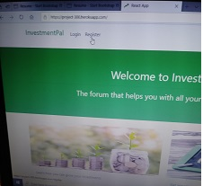
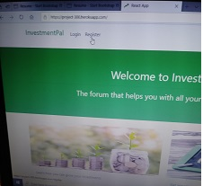

Martin Eyong
Versatile System Administration with over 5 years of work experience in troubleshooting, monitoring and administering system and network issues. Core knowledge in managing systems in an IT environment and in networking configurations with an entry level as a web sites responsive websites on various platforms. Experinced in managing projects on web developement and Linux platform by building highly responsive websites and activities demonstrating skills and technical expertise on troubleshoot upgrading and patching servers.Created and promoted the website for the projects and advertised it to at the University of Kansas faculty staff, students and company's leadership members during"Demo Day". Upgrade user settings and debug technical issues on Linux and Windows operating systems, resolving an average of 40 per day issues using ticketing tools. Evaluated services through biannual survey administered to all employees who utilized services within the preceding six months
Experience
System Engieer
• Creat new user account, delete other user and troubleshoot customers account and providing internal and
external customers with an exceptional customer services solution through email, text and phone callls.
• Organising a standup daily routine meeting where all documented issues for the previous day are been
analyst and uncomplete task are distributed depending on competencies and determinations.
• Update, upgrade multiple linux servers by installing and configuring a quick installation tools call
kickstart.
• Full implementing and training other coworks with the use of a linux commanline management.
• Installed, maintained and fine-tuned the Apache-Tomcat server in Linux Platform
• Experience in creating Virtual and Physical server using kick start for RHEL.
• Experience in configuring NFS, SAMBA file server and administration for sharing of resources between
Linux and Windows environments.
• Works with teams to plan, coordinate and communicate all large changes to production systems with all
necessary parties.
Installation and configuration of 3rd party software, services and Patch
management which enhances the operations of the organization – (Apache, MySQL, PHP, etc.)
• Installed and configured VMware ESX server instances for virtual server setup and deployment.
Responsible for creating VMware virtual guests running Linux, Windows.
Entry Level Web Developer
• Experience in developing interactive, responsive websites on various platforms from initiation to
launch.
• Solid understanding of the following web technologies: HTML, MySQL, JavaScript, CSS, PHP, and Linux.
• Capable of learning a new programming language when applicable.
• Design, build, test, troubleshoot, and support website-based applications
• Optimize performance of web applications
• Communicate with the full spectrum of global stakeholders and colleagues
• Knowledgeable with the following platform
• MySQL, MongoDB, HTML, Git, JavaScript, jQuery, CSS, React.js, Node.js
system Engineer
• Validates patching results using metrics and dashboards.
• Ensures exceptions are documented and works with Security on requested exceptions.
• Ensures scanning and monitoring systems are producing consistent results.
• Works with applicable groups to maintain and improve upon configuration management strategies utilizing
•current tooling
Installation, Configuration, Administration and Troubleshooting of ESXi6.x, vSphere
Installation of ESXi server and creation of VMs and install different guest OS, Installation and
administration for window server
Provided stable build environments for product development.
•Creating and deleting and managing user accounts and managing user quotas on the Network.
• Configuring DNS, DHCP, NIS, NFS in Red Hat Linux & other Network Services, Linux kernel, memory upgrades
and swaps area.
•Administration/Configuration of Print Servers/Clients in the Network, planning, configuration and
maintenance of connectivity for servers as well TCP/IP configuration.
Lan/Wan IP generator and configuration of route and switches.
Helpdesk Support
• Assisted in maintaining daily IT support log and creating weekly summary sent to the management.
• Part of a team that was tasked to investigate the logistics of moving the company to a new network
operating platform.
• Assisted in developing personnel training materials.
• Assisted company’s users from multiple locations who called with various IT issues.
Installed and configured Windows computers, LAN, and printers/scanners
Education
University of Kansas
Graduated
Certifications
- Web Developer
- Linux Certification
- LPIC Certification
University Institutte Of Higher Education
Graduated
Lycee Bilingue D'Yaounde
Graduated
Portfolio
- Mobile-First, Responsive Design
- Cross Browser Testing & Debugging
- Cross Functional Teams
- Agile Development & Scrum
Interests
Apart from being a System Administrator and a web Developer, I enjoy most of my time with my family reading,
reseaching new
technologies,troubleshoot,coding.
I also excel at teamwork and have leadership skills.
When forced to stay indoors, I play with my kids and keep them busy with games,excise, story telling and volunteering helping those who serve our Nation our Veteran with whom i have great respect and honour.
Project screenshot
 
